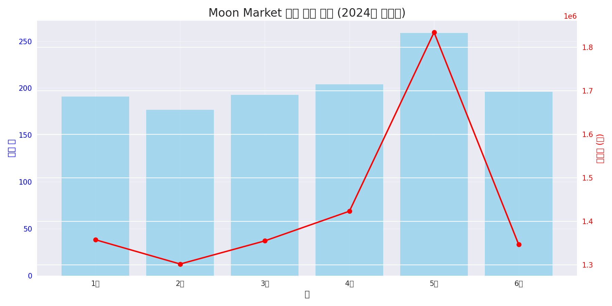

아마존 상품판매 데이터 분석 및 마케팅 인사이트 도출 보고서
개요
본 보고서는 아마존 상품판매 데이터를 분석하여 마케팅 인사이트를 도출한 결과입니다. 데이터셋은 1,220개의 주문 데이터를 포함하고 있으며, 기본 데이터 탐색부터 상품 판매 트렌드, 변수 관계 분석, 고객 세그먼트 분석 등을 수행했습니다.
주요 발견사항
- 과일 카테고리가 3,967,350원으로 가장 높은 매출을 기록했으며, 평균 주문 금액도 가장 높음
- 일요일이 1,337,340원으로 가장 높은 매출을 기록
- 프로모션이 적용된 주문은 미적용 주문보다 평균 3,605원 더 높은 금액을 기록
- 50대 남성이 과일 카테고리에서 가장 높은 매출을 기록 (987,400원)
- 배송 서비스 레벨 중 Standard가 가장 많이 사용되지만, Expedited와 Priority 서비스가 더 높은 평균 주문금액을 기록
1. 데이터 개요 및 기초 분석
분석에 사용된 데이터셋은 총 1,220개의 주문 기록과 18개의 변수로 구성되어 있습니다.
1.1 데이터 구조
데이터셋은 다음과 같은 변수들로 구성되어 있습니다:
- index, Date: 주문 번호 및 날짜
- Status, Fulfilment, Courier Status: 주문 상태 관련 정보
- ship-service-level: 배송 서비스 수준 (Standard, Expedited, Priority)
- Style, SKU, Category, Size: 상품 관련 정보
- Qty, Amount: 주문 수량 및 금액
- ship-city, ship-state, ship-postal-code: 배송지 정보
- promotion-ids: 적용된 프로모션 ID
- Gender, Age Group: 고객 인구통계 정보
1.2 기술통계량
주문 수량(Qty)은 평균 1.79개이며, 주문 금액(Amount)은 평균 7,064원입니다. 최소 주문 금액은 2,900원, 최대 주문 금액은 23,700원입니다. 프로모션 ID(promotion-ids)에는 103개의 결측치가 있으며, 이는 프로모션이 적용되지 않은 주문을 의미합니다.
2. 판매 트렌드 분석
2.1 월별 매출 트렌드
전체 기간 동안의 총 매출액은 8,619,150원이며, 월평균 매출액은 1,436,525원입니다. 2024년 5월에 가장 높은 매출을 기록했습니다.

그림 1: 월별 매출액 추이
2.2 카테고리별 매출 분석
카테고리별 매출은 과일이 3,967,350원으로 가장 높았으며, 유제품이 2,262,100원으로 가장 낮았습니다. 과일 카테고리는 가장 높은 평균 주문 금액(9,582원)을 기록했습니다.

그림 2: 카테고리별 총 매출액
2.3 성별/연령대별 구매 패턴
성별 매출 비중은 남성(M)이 4,655,800원, 여성(F)이 3,963,350원으로 남성의 매출 비중이 더 높습니다.

그림 3: 성별/연령대별 매출액
2.4 주문/배송 현황
모든 주문(1,220건)이 "Shipped" 상태이며, 배송 서비스 레벨은 Standard(588건), Expedited(403건), Priority(229건) 순으로 사용되고 있습니다.

그림 4: 주문 상태 및 배송 서비스 분포
인사이트: 과일 카테고리는 총 매출과 평균 주문금액 모두에서 상위를 차지하여, 고부가가치 제품으로 판단됩니다. 또한 남성 고객이 여성 고객보다 더 높은 매출 기여도를 보여주고 있으며, Standard 배송 옵션이 가장 많이 선택되고 있습니다.
3. 변수 관계 및 패턴 분석
3.1 주문 수량과 금액의 관계
주문 수량과 금액 간의 상관계수는 0.383으로, 약한 양의 상관관계를 보입니다. 평균 단가(금액/수량)는 4,454원입니다.

그림 5: 주문 수량과 금액의 상관관계
3.2 카테고리별 상세 분석
카테고리별 평균 주문금액은 과일(9,582원), 유제품(6,500원), 채소(5,217원) 순으로 높게 나타났습니다. 주문 건수는 채소(458건), 과일(414건), 유제품(348건) 순으로 많았습니다.

그림 6: 카테고리별 평균 주문 금액
3.3 요일별 주문 패턴
요일별 매출은 일요일(1,337,340원), 금요일(1,262,840원), 월요일(1,246,450원) 순으로 높게 나타났습니다. 가장 낮은 매출을 기록한 요일은 화요일(1,162,160원)입니다.

그림 7: 요일별 총 매출액
3.4 프로모션 효과 분석
프로모션이 적용된 주문(1,117건)의 평균 금액은 7,369원으로, 프로모션이 적용되지 않은 주문(103건)의 평균 금액 3,764원보다 3,605원 더 높습니다. 프로모션 적용 주문의 총 매출액은 8,231,450원으로 전체 매출의 95.5%를 차지합니다.

그림 8: 프로모션 효과 분석
인사이트: 프로모션은 주문 금액을 크게 증가시키는 효과가 있으며, 일요일과 금요일에 판매가 집중되는 패턴을 보입니다. 과일 카테고리는 다른 카테고리보다 높은 평균 주문금액을 기록하여 고부가가치 상품으로 확인됩니다.
4. 고객 세그먼트 및 지역 분석
4.1 고객 세그먼트 분석
성별, 연령대, 카테고리별로 세그먼트를 구분하여 분석한 결과, 50대 남성의 과일 카테고리 구매가 987,400원으로 가장 높은 매출을 기록했습니다. 그 다음으로는 30대 남성의 과일 카테고리 구매(829,400원), 30대 여성의 과일 카테고리 구매(773,790원) 순입니다.

그림 9: 성별 x 연령대별 매출액 히트맵
4.2 지역별 분석
지역별 매출은 서울이 6,598,880원으로 가장 높았으며, 경기도가 2,020,270원으로 그 뒤를 이었습니다. 평균 주문금액은 경기도가 8,279원으로 서울(6,761원)보다 높게 나타났습니다.

그림 10: 상위 지역별 매출액
4.3 배송 서비스 레벨별 분석
서비스 레벨별로는 Standard 서비스가 588건으로 가장 많이 사용되었으나, 평균 주문금액은 Priority(8,044원)와 Expedited(7,554원)가 Standard(6,347원)보다 높았습니다. 평균 주문수량은 Expedited 서비스가 2.44개로 가장 많았습니다.

그림 11: 배송 서비스 레벨별 분석
인사이트: 50대 남성과 30대 남성이 과일 카테고리에서 가장 높은 매출을 기록하고 있어 주요 타겟 고객층으로 볼 수 있습니다. 서울 지역이 가장 높은 매출을 기록하고 있으나, 경기도 지역은 더 높은 평균 주문금액을 보이고 있어 고객 가치가 높은 지역으로 볼 수 있습니다.
5. 종합 인사이트 및 마케팅 제안
5.1 주요 마케팅 인사이트
- 카테고리 성과: 과일 카테고리는 최고 매출과 최고 평균단가를 기록하여 가장 수익성 높은 카테고리로 확인됨
- 주문 패턴: 일요일과 금요일에 판매가 집중되는 패턴을 보이며, 화요일에 가장 낮은 매출을 기록
- 프로모션 효과: 프로모션은 평균 주문금액을 96% 증가시키는 효과를 보여 매출 증대에 크게 기여
- 고객 세그먼트: 50대 남성과 30대 남성이 과일 카테고리에서 가장 높은 매출 기여도를 보임
- 지역 특성: 서울 지역이 가장 높은 매출을 기록하나, 경기도 지역 고객의 평균 주문금액이 더 높음
- 배송 서비스: 상위 서비스(Priority, Expedited)를 이용하는 고객이 더 높은 평균 주문금액을 보임
5.2 마케팅 제안사항
- 타겟 마케팅 강화: 50대 및 30대 남성을 대상으로 과일 카테고리 프로모션을 강화하여 높은 ROI 기대
- 요일별 차별화 전략: 화요일과 같이 매출이 낮은 요일에 특별 프로모션을 제공하여 매출 균형 개선
- 프로모션 최적화: 프로모션 효과가 높게 나타나므로, 수익성을 고려한 전략적 프로모션 설계 필요
- 지역 타겟팅: 서울 지역은 물량 확대 전략, 경기도 지역은 고객 가치 증대 전략 적용
- 배송 서비스 업셀링: Standard 서비스 이용 고객을 대상으로 상위 서비스로의 전환 유도 프로그램 개발
- 상품 추천 강화: 과일 구매 고객에게 유제품이나 채소와의 번들 상품을 추천하여 교차 판매 증대
5.3 한계점 및 추가 분석 제안
본 분석의 한계점과 추가 분석 제안은 다음과 같습니다:
- 현재 데이터는 "Shipped" 상태의 주문만 포함하고 있어, 주문 취소나 반품 등의 정보가 부족함
- 고객 만족도나 리뷰 데이터가 없어 제품 품질이나 고객 경험에 대한 분석이 어려움
- 더 세분화된 카테고리 정보나 상품 속성 정보가 있다면 더 구체적인 인사이트 도출 가능
- 고객 생애 가치(CLV) 분석을 위한 장기간의 구매 이력 데이터 필요
- 마케팅 채널이나 캠페인 정보를 추가하여 마케팅 활동의 ROI 분석 필요
6. 결론
아마존 상품판매 데이터 분석을 통해 카테고리별 성과, 고객 세그먼트별 구매 패턴, 프로모션 효과, 지역별 특성 등 다양한 인사이트를 도출했습니다. 과일 카테고리가 가장 높은 매출과 평균 주문금액을 기록하고 있으며, 50대 및 30대 남성이 주요 고객층으로 확인되었습니다. 프로모션은 주문 금액을 크게 증가시키는 효과가 있어 전략적인 프로모션 설계가 중요합니다.
이러한 인사이트를 바탕으로 타겟 마케팅 강화, 요일별 차별화 전략, 프로모션 최적화, 지역별 타겟팅, 배송 서비스 업셀링 등의 마케팅 전략을 수립하여 매출 증대와 고객 가치 향상을 도모할 수 있을 것입니다.